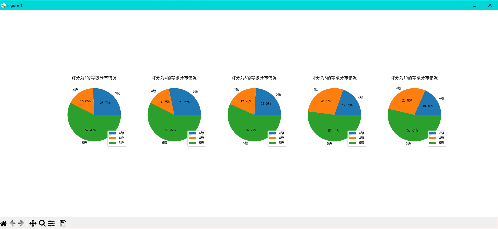
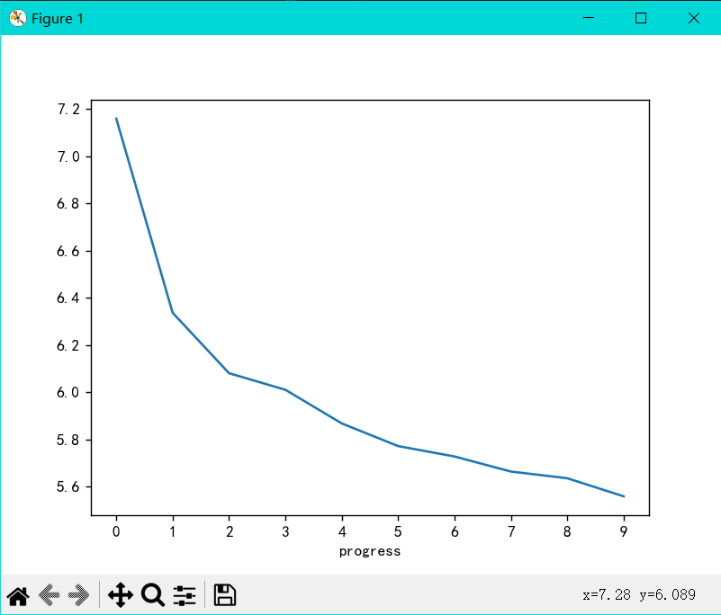
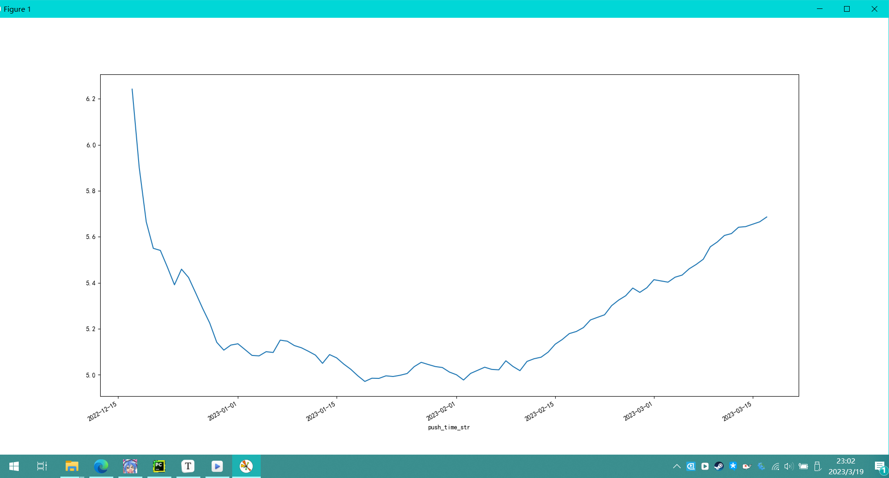
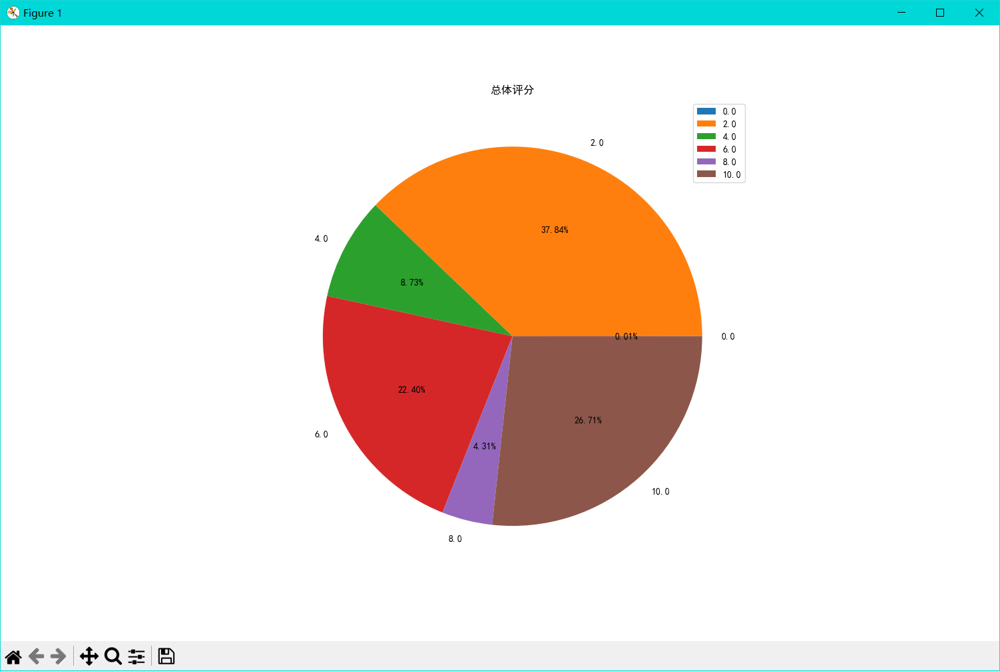
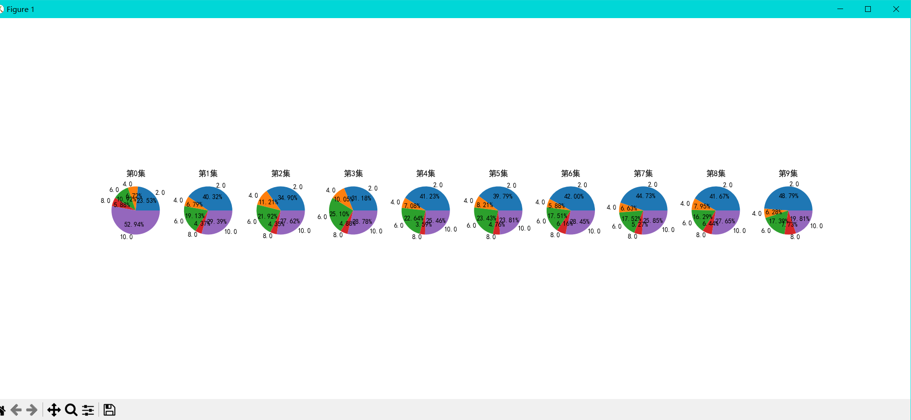
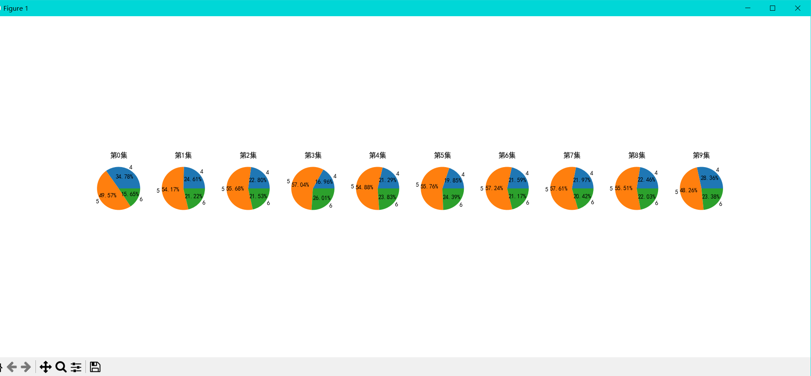
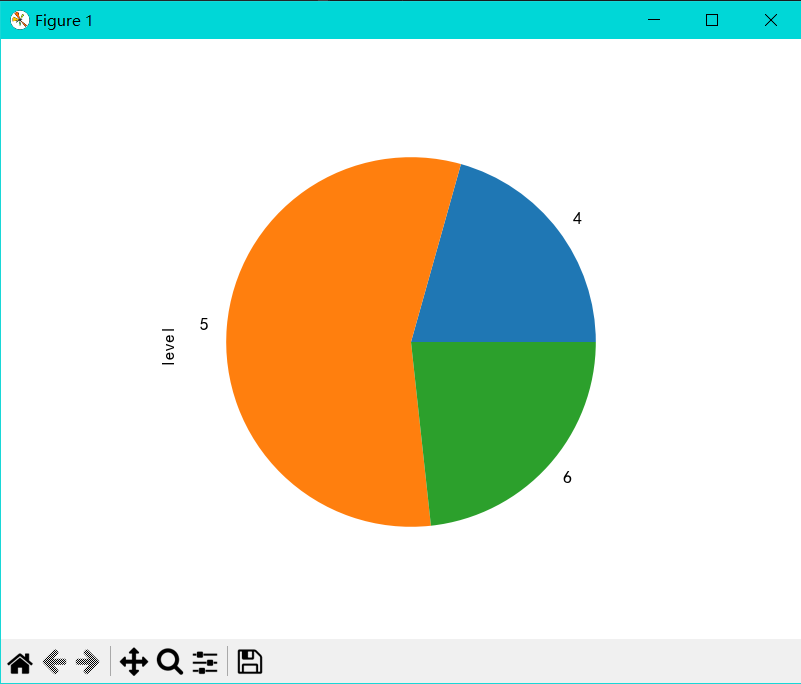
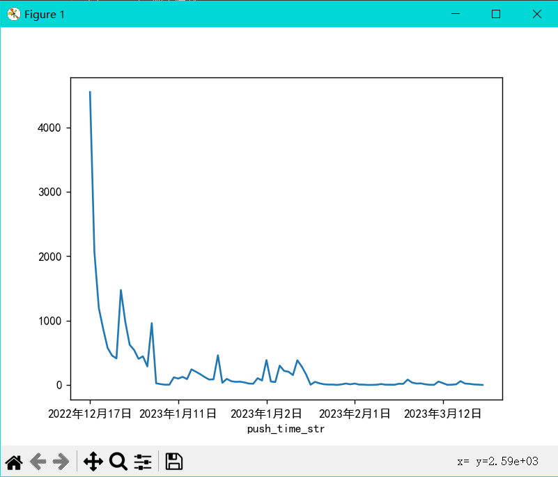
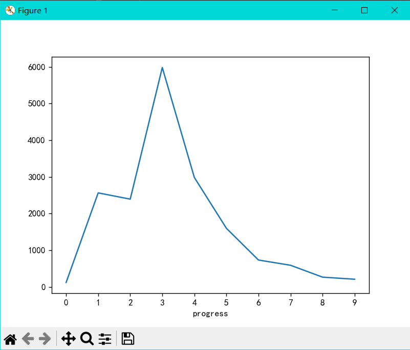

再次确定目标
- 每个评分段与评分人等级间的关系
- 饼图-详细展示每个评分段情况
- 评分随集数的变化
- 折线图 x-集数 y-评分
- 评分随时间的变化
- 折线图 x-时间 y-评分
- 评分的总体情况
- 饼图
- 每集的评分占比
- 饼图
- 每集的评分人等级占比
- 饼图
- 评分人等级的总体分布
- 饼图
- 评分数量与时间的关系
- 折线图 x-时间 y-数量
- 评分量与集数的关系
- 折线图 x-集数 y-数量
导入好多好多库
1 | import numpy as np |
基础起手
1 | # 更改字体防止乱码 |
每个评分段与评分人等级间的关系
1 | # 每个评分段与评分人等级间的关系 |
结果：

评分随集数的变化
1 | # 评分随集数的变化 |
结果：

评分随时间的变化
1 | # 评分随时间的变化 |
结果如下：

评分的总体情况
1 | # 评分的总体情况 |
结果：

每集的评分占比
1 | # 每集的评分占比 |
结果：

每集的评分人等级占比
1 | # 每集的评分人等级占比 |
结果：

评分人等级的总体分布
1 | # 评分人等级的总体分布 |
结果：

评分数量与时间的关系
1 | # 评分数量与时间的关系 |
结果：

评分量与集数的关系
1 | # 评分量与集数的关系 |
结果：

最后的重要步骤
加入铃仙：
1 | ''' |